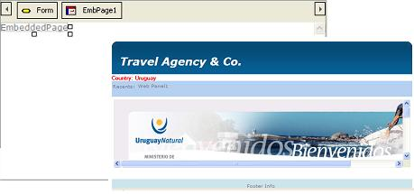
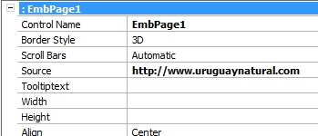

The Embedded Page control allows you to display content from any URL in Web Objects generated by GeneXus. That is to say, it is a control that can be inserted in a Web Panel or Web Transaction. Also, it may be associated to any page or GeneXus Web Object, the content of which will be included within the object at runtime. The pages included can be static or dynamic pages, and either of the application itself or developed by third parties. These pages may be in the same server as the application or in another server. Embedded Pages are generated as an inline frame in the final HTML. When the object that contains an Embedded Page is executed, the browser performs the requirement of the associated page and includes it in the inline frame. To add an Embedded Page control to the selected location, drag into the Web Form the corresponding icon from the toolbox. The following example shows a Web Panel that has a Master Page applied for this case. The Embedded Page control is contained in the ContentPlaceHolder of this Master Page.  
To load the desired web site, the http://www.uruguaynatural.com value was loaded in the control’s Source property. If a Source property value is not specified in the control properties, a value must be assigned to it in the Start or Refresh event. For example: MyPage.Source = “http://www.genexus.com” MyPage is the name of the Embedded Page control. URLs can also be dynamically assigned. For example: &url = “http://www.genexus.com” MyPage.Source = &url Note that the dimensions of the space where the web site will be displayed are set with the Width and Height properties. Both can also be changed at runtime. Embedded Pages can be included inside Free Style Grids.
|
| Backlinks | ||
| Category:Common Controls | ||
| Category:Embedded | Category:Free Style Grid control | Identifier Property |
| Web Panel form |